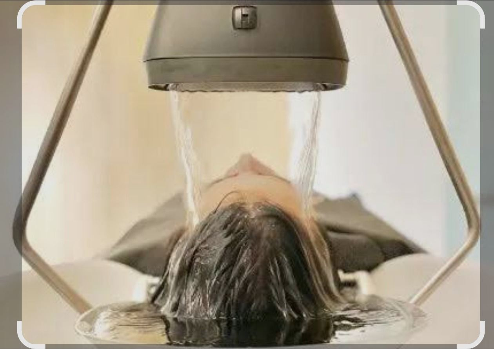

YUME 头浸浴与头皮护理Head spa & scalp care in Mount Austin.
躺在 Takara Belmont YUME 洗护床上，用 70 分钟、11 个步骤，把头皮洗干净，也让自己好好放松。如果你有头皮油、痒、头皮屑或掉发的困扰，也有对应的头皮护理疗程。
- YUME 11 步 · 70 分钟
- 优惠 RM365（原价 RM580）
- 头皮护理 RM250 起
- 需预约

先看头皮，再选疗程Scalp first, then the right treatment.
每个人的头皮状况都不一样：有人偏油、有人干痒、有人担心掉发。我们会先看你的头皮和头发状况，再建议适合的疗程，也会告诉你回家怎么洗、怎么保养。
We check your scalp and hair first, then recommend the right treatment and show you how to care for it at home.
躺式洗护床，11 个步骤、约 70 分钟，深层清洁加放松。
针对掉发、头皮屑和头皮负担感的护理疗程。
温热舒缓的头皮护理，适合想要好好放松的人。
头皮护理价钱Scalp & head spa price (RM)
YUME Headbath 优惠价以店内公布为准。实际疗程会根据头皮和头发状况建议。
客人怎么说From our Google reviews
"yume headbath超舒服！"
"I'm in love with this place for head spa! Ching is very helpful and understand my need so well."
"Scalp treatment very effective and hair products used are good quality."
"护理完头发超舒服，老板娘也会跟你分析头发和头皮状况。"
Head Spa 常见问题Head spa FAQ
YUME 头浸浴是什么？
用 Takara Belmont YUME 躺式洗护床做的头皮护理，11 个步骤、约 70 分钟，深层清洁头皮，同时让身体和心情放松。现在优惠价 RM365（原价 RM580）。
头皮护理多少钱？
5 步骤头皮护理（30 分钟）RM250；防脱、生发、去屑 RM300；姜疗 RM350 起。
有私人房间吗？
有私人房间，也有 Muslim friendly 产品，预约时先告诉我们就可以。
需要预约吗？
需要。营业 10am–6pm，星期四休息，请先 WhatsApp +6011-7012 2592 预约。